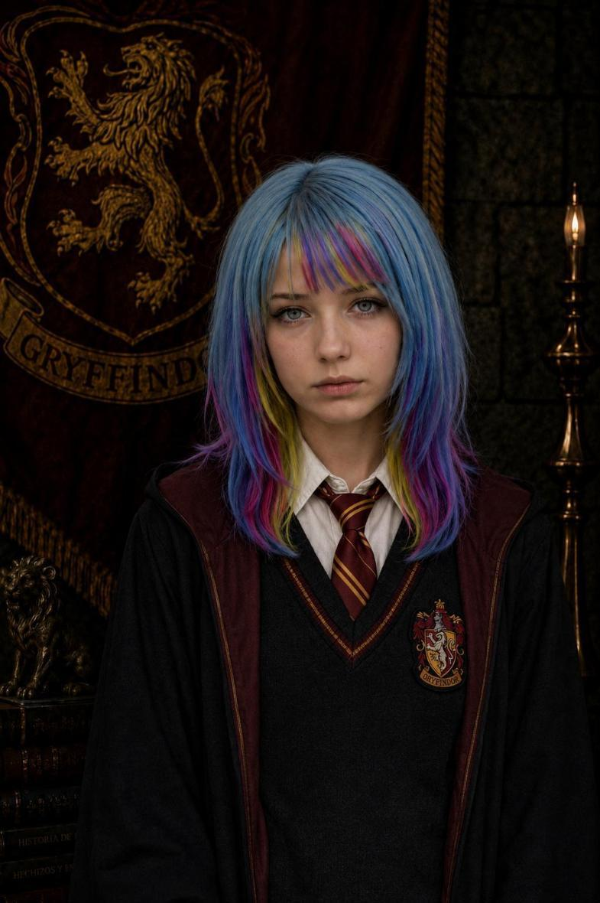

Jefe de Casa

Noah O. Gaunt
Profesor de DCAO · Jefe de Gryffindor
Fundada por Godric Gryffindor, esta casa reúne a estudiantes reconocidos por su valentía, determinación, audacia y disposición para defender aquello en lo que creen.

Godric Gryffindor fue uno de los cuatro fundadores del Colegio Hogwarts de Magia y Hechicería. Reconocido por su valentía y determinación, valoraba especialmente a quienes demostraban coraje, nobleza y disposición para defender aquello en lo que creían.
Su legado continúa presente en los estudiantes de Gryffindor, una casa en la que el valor no se mide por la ausencia de miedo, sino por la decisión de seguir adelante a pesar de él.
Profesor de DCAO · Jefe de Gryffindor

Primer Año · Comité de Graduación

Primer Año

Tercer Año · Prefecta

Tercer Año · Quidditch · Fotografía

Tercer Año · Porrista

Tercer Año

Quinto Año · Porrista

Quinto Año

Sexto Año · Porrista

Sexto Año

Sexto Año

Sexto Año

Sexto Año

Sexto Año

Sexto Año

Sexto Año

Sexto Año · Comité de Graduación
.jpeg)
Sexto Año

Séptimo Año · Jefa de Prefectos

Séptimo Año · Prefecta

Séptimo Año · Prefecta
Séptimo Año · Prefecto

Séptimo Año · Capitán de Quidditch

Séptimo Año

Séptimo Año

Séptimo Año

Séptimo Año · Prefecto Reclutador

Séptimo Año

Séptimo Año

Séptimo Año

Séptimo Año

Séptimo Año
.jpeg)
Séptimo Año